이 글은 전체 2편 중 1편입니다. 긴 영상을 주제 흐름에 맞춰 나누어 정리했습니다.
채널: AgentOS | 길이: 58:19 | 날짜: 2026-10-03
이 글은 전체 2편 중 1편입니다.
핵심 내용
- 1993년 서울의 한 경제연구소 강당에서 낡은 청바지와 모자를 쓴 강연자가 칠판에 WWW를 쓰고 “머지않아 은행·증권사·전쟁이 이 안으로 들어온다”고 말했다. 박사급 연구원 50명이 앉아 있었지만 강연 시작 10분쯤부터 뒷줄 사람들이 하나씩 나가기 시작해 30분 만에 대부분 퇴장했고, 맨 뒷줄 외부 손님 몇 명만 남았다. 이 장면은 새 기술을 알아보는 사람과 그렇지 못한 사람의 극명한 대비를 보여준다.
- 강연이 끝난 뒤 맨 뒷줄에 있던 한 백수 친구가 주차장으로 뛰어가 강연자의 차문을 열고 “저를 WWW 세상으로 인도해 주십시오”라고 말했다. 그는 미국에서 MBA를 마치고 돌아와 1년째 일자리가 없던 고향 친구였지만, 훗날 이메일 회사를 세워 자산 가치 2조 원 가까운 기업으로 키운다. 박경철은 같은 자리에서 같은 말을 들었지만 강연자를 “망상장애 환자”로 판단했고, 백수 친구만 그 말을 인생을 걸 복음으로 받아들였다.
- 이 이야기를 전한 사람은 2008년 아주대학교 강연에서 이 일화를 꺼낸 외과 전문의 박경철, 필명 ‘시골의사’다. 그는 1993년 대전의 한 종합병원에서 외과 전문의가 막 되었을 때 세 배 월급 조건으로 혼자 외래·수술·응급실을 감당하다가 3주 만에 탈진했다. 밤에 두 시간 이상 연달아 자지 못할 정도였고, 걷기까지 휘청거리는 상태였다.
- 박경철은 서울의 경제연구소 친구에게서 “평생 후회할 강연”이라는 말을 듣고, 원장에게 대장암 라이브 수술 세미나를 핑계로 거짓말해 휴가와 100만 원을 얻어 서울로 올라간다. 원장은 그의 거짓말을 알면서도 “노구를 이끌고 내가 지키고 있을 테니 갔다 와라”며 돈을 쥐여주었고, 박경철은 그것을 ‘횡재’로 생각했다. 이 거짓말은 훗날 그가 백수 친구를 강연장에 데려가는 결정적 계기가 된다.
- 1993년은 모자이크 웹 브라우저가 처음 공개된 해였고, 한국 일반인이 돈을 내고 인터넷을 쓰기 시작한 것은 그다음이었다. 대부분은 하이텔·천리안 같은 PC통신의 파란 화면과 글자에 익숙했기 때문에 WWW 강연은 정신병자나 망상장애 환자의 이야기로 들렸다. 박경철은 “내일부터 대학에서 각자 로켓 추진기를 한 개씩 지급해 그것을 타고 집에 가겠다”는 이야기와 같은 수준이라고 표현했다.
- 강연자는 “WWW 세상 안에 은행도 들어오고 증권사도 들어오고 핵무기도 만들고 전쟁도 한다”고 주장했지만, 박경철을 포함한 청중은 그를 과대망상 환자로 취급하며 자리를 떴다. 박경철은 “테트리스 개발하다 미쳤거나 망상장애가 있다”고까지 생각했다. 강연자는 박수도 받지 못한 채 쫓겨나듯 문을 열고 나갔다.
- 유일하게 강연에 깊은 감명을 받은 사람은 박경철이 데려간 백수 친구였다. 그는 박경철에게 10만 원을 빌려 강연자와 따로 이야기하겠다며 주차장으로 뛰어가 강연자의 차문을 열고 “저는 W를 믿습니다”라고 말했다. 박경철은 이때 “백수는 보통 사람과 감정 반응이 다르다”는 두 번째 백수 이해를 하게 된다.
- 백수 친구는 마포의 주먹구이집까지 강연자를 끌고 가 새벽 2시까지 붙잡고 “WWW 세상으로 뛰어들 수 있는 실마리를 달라”고 요구했다. 인내심밖에 없는 백수의 끈질김에 강연자는 결국 조언을 남기고 풀려났다. 이후 2~3년 뒤 강연자 W는 자본금 700만 원으로 작은 이메일 회사를 세웠고, 이 회사는 자산 가치 2조 원 가까운 기업으로 성장한다.
- 박경철은 회사의 성공보다도 15년 전에 들었던 예언이 현실이 되었다는 사실에 소름 끼쳐 한다. 아무도 믿지 않고 “미쳤다”고 했던 이야기가 지금 눈앞에 거짓말처럼 펼쳐져 있다는 것이다. 그는 “5천만 명 중에 한 명 정도는 천재가 있다”고 인정하면서도, 문제는 그 천재가 아니라 그 옆에서 알아보고 뛰어든 백수라고 말한다.
- 박경철은 자신의 첫 월급 60만 원을 백수 친구에게 빌려주는 일을 겪는다. 친구는 “지금 빌려주든지 30년 인간관계를 끊든지”라고 협박했고, 박경철은 사회적 동물로서의 체면과 소문 때문에 결국 최소 생활비를 제외한 돈을 내준다. 지금도 그 일을 생각하면 “뼈가 아프다”고 말한다.
- 백수 친구는 그 돈으로 대구의 분식집 작은 방을 빌려 사업을 시작하고, 박경철에게 “가상 주소 하나만 만들어 달라”고 부탁한다. 박경철은 “1년에 편지 3통 이상 쓰는 사람이 있겠냐, 우표값 30원 아끼려고 컴퓨터로 편지를 쓰겠냐, 편지는 손으로 쓰는 것”이라며 세 가지 이유로 사업을 부정한다. 그러나 친구는 “W가 에브리바디가 컴퓨터로 편지를 쓰는 날이 온다고 했다”고 반박한다.
- 1993년의 상식은 계산이 틀린 것이 아니라 전제가 틀린 것이었다. 쓸 사람이 없었던 것이 아니라 아직 사람들이 연결되지 않았을 뿐이었고, 병원에 전용선이 들어오면서 그 연결이 시작된다. 박경철의 병원에는 정보고속도로 사업과 행정전산망 사업으로 정부 지원 컴퓨터와 인터넷 전용선이 들어왔지만, 처음에는 하이텔 접속이 조금 빨라지는 것 외에는 쓸 데가 없었다.
- 백수 친구는 전용선이 있는 정부·대기업·종합병원 근무 동창들을 하나씩 전화로 설명해 가입시키고 메일을 뿌렸다. 박경철이 받은 메일의 수신인은 170명이었고, “대전에 무슨 병원인데 너네들은 어디 있니”라고 답장하자 이틀 만에 70~80통의 답장이 쏟아졌다. 이후 병원 직원들이 일주일 만에 메일 서비스에 가입하면서 병원 업무가 마비될 정도로 메일 열풍이 일었다.
- 이 전자메일 서비스는 서울이 아닌 대구에서 시작된 한국 최초의 상용 이메일이었고, 1년 반 만에 250만 가입자를 모았다. 1999년 초에는 골드만삭스에 600억 원에 지분을 넘기고, 강연자 W는 포스코센터 옆 빌딩을 소유한 벤처기업 회장이 된다. 박경철은 “내 돈은 아직 안 갚았다”고 농담 섞어 말한다.
- 박경철은 제레미 리프킨의 책에서 0.1%의 창의적 인간, 0.9%의 안목 있는 인간, 99%의 잉여 인간이라는 구도를 발견한다. 그는 W를 0.1%, 백수 친구를 0.9%, 자신을 99%에 놓으며 “0.9%는 천재가 아니라 새로움을 알아보고 뛰어드는 사람”이라는 결론에 도달한다. 이어 200년 전 산업혁명의 방적기와 양모, 감자밭을 갈아엎은 사람들, 토머스 모어의 『유토피아』를 통해 그 구도를 역사적으로 검증한다.
상세 분석
1. 1993년 서울의 경제연구소, 낡은 청바지 강연자가 쓴 WWW
영상은 1993년 서울의 한 경제연구소 강당에서 시작된다. 강당에는 박사급 연구원들로 의자 50개가 꽉 차 있었고, 강연자가 들어오기 전까지는 상당히 권위 있는 분위기였다. 그런데 강연자가 문을 열고 들어와 무대에 오르는 순간, 청중의 표정이 변하기 시작한다. 강연자는 낡은 청바지에 모자를 쓰고 있었고, 이후 밝혀지듯 무릎이 다 나온 찢어진 청바지에 UCLA 티셔츠, 뉴욕 모자를 쓰고 있었다.
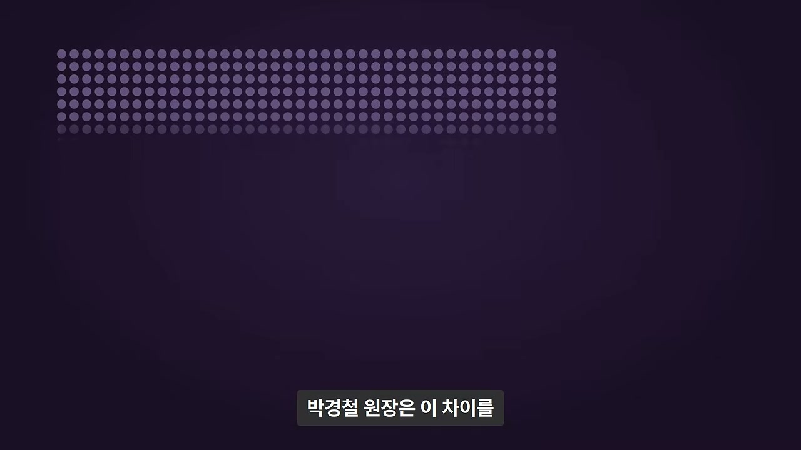
강연자는 칠판에 W 세 개, 즉 WWW를 쓴다. 그리고 “머지않아 이 안으로 은행도 들어오고 증권사도 들어오고 전쟁까지 여기서 하게 될 것”이라고 말한다. 1993년의 상식으로는 도저히 받아들이기 어려운 주장이었다. 강연이 시작된 지 30분 뒤 강당에는 맨 앞줄 몇 명과 맨 뒷줄 외부 손님 몇 명만 남았고, 나머지는 전부 일어나 나가 버렸다.
그런데 맨 뒷줄에 앉아 있던 한 사람은 강연이 끝나자 주차장으로 뛰어가 강연자의 차문을 열어젖힌다. 그는 미국에서 MBA를 마치고 돌아와 1년째 일자리가 없던 사람이었다. 자막에는 “NBA”로 표기되지만, 뒤에 “MBA 한다고 접시 닦고 온게”라는 발언이 나오는 것으로 보아 문맥상 MBA가 맞다. 몇 년 뒤 그는 이메일 회사를 차려 크게 성공한다.
이 이야기를 한 사람은 그날 그 백수 친구를 강연장에 데려간 외과 전문의 박경철이다. 2008년 아주대학교 강연에서 꺼낸 이야기이며, 박경철 본인은 그날 강연자를 “망상에 빠진 사람”이라고 생각한 쪽이었다. 같은 자리에서 같은 말을 들었는데 한 사람은 인생을 걸었고, 나머지는 “미친 소리”라며 나갔다는 것이 이 이야기의 핵심 구도다.
2. 세 숫자 0.1, 0.9, 99의 예고
영상은 박경철이 이 차이를 숫자 세 개로 설명한다고 예고한다. 0.1, 0.9, 그리고 99다. 이 숫자들이 무엇을 의미하는지는 영상 후반부에 나오지만, 도입부에서 미리 던져두면서 “새 기술을 알아보는 사람”과 “그렇지 못한 사람”을 구분하는 프레임을 제시한다.
이 숫자는 단순한 통계가 아니라 문명 발전에 참여하는 태도와 안목의 비율로 제시된다. 뒤에서 자세히 나오지만, 0.1은 처음 세상을 말하는 사람, 0.9는 그것을 알아보고 뛰어드는 사람, 99는 나중에 “세상 참 좋아졌다”고 말하는 사람으로 정리된다. 영상은 이 구도를 통해 “새 기술을 알아보는 0.9%의 조건”이 무엇인지 묻는다.
영상 중간중간에는 2008년 박경철의 강연 클립이 삽입된다. 진행자는 “자막같이 띄울게요”라고 말하며 강연 육성을 들려주고, 시청자가 박경철의 실제 목소리와 말투를 통해 당시 상황을 생생하게 따라갈 수 있도록 구성한다.
3. 화자 박경철: 시골의사, 외과 전문의, 연 500회 강연
박경철은 외과 전문의다. ‘시골의사’라는 필명으로 경제 칼럼과 책을 써서 알려졌고, 이 강연을 할 무렵에는 한 해에 500번 정도 강연을 다녔다고 한다. 즉 그는 의사이면서 경제·사회 현상에 대한 대중적 글쓰기와 강연을 활발히 해온 인물이다.
이야기는 1993년, 그가 막 외과 전문의가 되었을 때로 거슬러 올라간다. 당시 대전의 한 종합병원이 다른 병원보다 세 배의 월급을 주겠다고 제안했고, 그는 다음 날 바로 대전으로 내려간다. 그러나 가보니 병원 건물은 아직 골조 공사 중이었고, 의사는 본인이 처음이었다.
원래 외과 의사 세 명이 나누어 맡아야 할 외래, 수술, 응급실을 혼자 다 하는 대신 월급을 세 배 주겠다는 조건이었다. 그는 잠깐 고민하다가 “좋습니다. 근무해 보겠습니다”라고 답하고 근무를 시작한다. 이 선택은 이후 3주간의 극심한 혹사로 이어진다.
4. 1993년 대전: 세 배 월급과 3주간의 혹사
근무를 시작하고 3주가 지나자 그는 “죽을 것만 같다”고 표현한다. 충남대병원에서 환자가 밀려들면, 옆에 새 병원이 생겼으니 거기 가면 받아준다는 이유로 환자들이 다 그쪽으로 보내졌다. 그 결과 그는 낮에 외래 진료로 20~30명을 보고, 한숨 돌리려 하면 위에서 “수술 준비됐다”고 불러 수술하고, 내려오면 다시 환자 30명이 기다리는 상황을 반복했다.
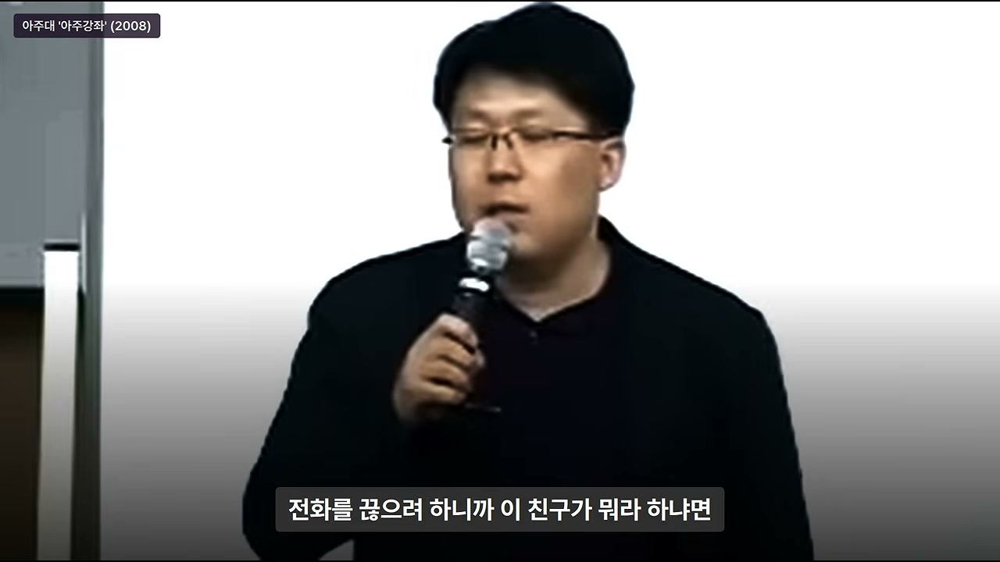
남들이 퇴근하는 저녁 시간이 되면 응급실에 환자가 와서 기다리고, 또 수술하고, 다시 올라가고 하는 일이 이어졌다. 3주 정도 지나자 그는 “정말 두 시간 이상 잠을 연달아 자보지 못했다”고 말한다. 걸음걸이도 휘청거릴 정도로 극도로 지쳐 있었고, 그때 서울의 한 경제연구소에 근무하는 친구에게서 전화가 걸려온다.
이 대목은 뒤에 나오는 “강연을 들으러 서울에 갈 수 있느냐”는 갈등의 배경을 만든다. 그는 병원 하나를 혼자 감당하고 있었기 때문에, 경제 강연을 들으러 서울에 갈 상황이 아니라고 판단한다.
5. 서울 친구의 초대와 “평생 후회할 것”이라는 말
서울의 경제연구소 친구는 반갑게 전화를 받은 뒤 다짜고짜 “좋은 강연이 있는데 하나 들어오지 않겠느냐”고 말한다. 박경철이 무슨 강연이냐고 묻자, 친구는 “미래 사회 트렌드에 대한 강연인데, 프랑스 유학을 갔다 온 아주 똑똑한 친구가 한다”며 “들어두면 굉장히 좋은 강연이고 일생에 좋은 기회”라고 강조한다.
박경철은 단호하게 거절한다. “대전 시민의 생명이 내 양(손)에 다 걸려 있다. 지금 경제 강연 들으러 간다고 병원 비워놓고 갈 상황이 아니다. 말 같지도 않은 소리 하지 마라”며 전화를 끊으려 한다. 그러자 친구는 “이 강연을 안 들으면 평생 후회할 것”이라고 말한다.
박경철은 그래도 “시끄럽다”며 전화를 끊었다. 그러나 그는 사람의 심리를 이렇게 설명한다. 자기에게 좀 못난 사람이 “평생 후회한다”, “일생일대 기회”라는 말을 하면 그 말이 기억에 계속 맴돈다는 것이다. 실제로 그는 밤에 수술하다가 배를 가르고 창자를 들어올리다가도 “이놈이 평생 후회한다는데” 하는 생각이 들어 도저히 견딜 수 없었다고 한다.
6. 원장실 거짓말과 100만 원, 그리고 평일 오후 3시
다음 날 아침, 박경철은 원장실 문을 열고 원장을 찾아간다. 그리고 “서울대학병원에서 닥터 보조기가 와서 대장암 라이브 수술 세미나를 하는데, 이걸 보고 오면 우리도 대장암 특수 클리닉을 개설하는 데 도움이 될 것 같다”고 거짓말을 한다. 원장은 고개를 갸웃하며 “당신이 공부를 그렇게 좋아하는 줄 몰랐다”고 말한다.
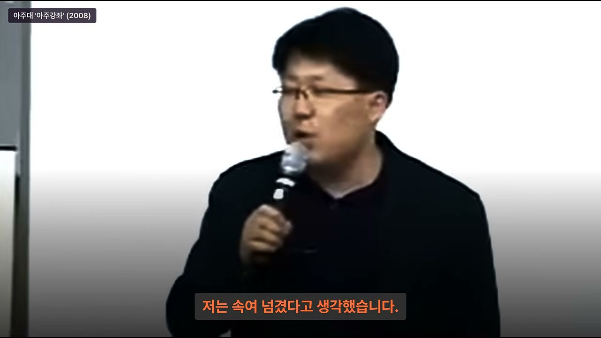
박경철은 “배우면 길에 끝이 없다. 비록 전문의 시험을 치고 왔지만 더 배워서 나쁠 게 뭐가 있냐”고 답한다. 원장은 “그래, 뭐 공부한다는데 어떡하나. 노구를 이끌고 내가 지키고 있을 테니 갔다 와라”며 허락한다. 박경철은 속으로 쾌재를 부르며 돌아서는데, 원장이 갑자기 “박사님 좀 보자”라고 부른다.
그는 공식 출장이라면 학회 세미나 카탈로그나 자료를 가져오라는 줄 알고 뜨끔했다. 그러나 원장은 가슴에서 지갑을 꺼내 무려 100만 원을 주며 “이왕 서울 간 김에 학회 마치고 친구들 만나 밥도 사 먹고 술도 한잔하고 놀다가 다음 날 와라”고 말한다. 박경철은 “세상에 이런 횡재가 있나” 생각하며 원장을 속였다고 여겼다.
하지만 돌이켜보면 원장은 그의 거짓말을 알고 있었던 것 같다고 박경철은 말한다. 3주 동안 극심하게 고생한 그가 거짓말까지 하며 서울에 가려 하니, 한번 풀어주지 않으면 그만두고 영 돌아오지 않을 수 있다고 판단해 용돈을 준 것이라는 해석이다. 박경철은 당시에는 자신이 원장을 속였다고 생각했다.
그렇게 원장을 속여 얻은 휴가와 100만 원이었지만, 평일 오후 3시 강연에 같이 갈 사람이 없었다. 직장인은 다 회사에 있을 시간이었기 때문이다. 그래서 그는 미국에서 MBA를 마치고 돌아와 1년째 일자리가 없던 고향 친구를 데려간다. 박경철은 “백수는 누가 불러주기만 해도 반가워서 어디든 따라나선다”고 말한다.
7. 강연장의 위계: 최고 경제연구소, 박사급 50명, 맨 뒷줄 외부 손님
1993년이 어떤 시대였는지 설명이 이어진다. 그해에는 그림이 나오는 웹 브라우저 ‘모자이크’가 처음 공개되었다. 한국에서 일반인이 돈을 내고 인터넷을 쓸 수 있게 된 것은 그다음 일이었고, 대부분은 하이텔이나 천리안 같은 PC통신에서 파란 화면에 글자만 주고받는 시절이었다.
그 연구소는 당시 국내 최고로 꼽히던 경제연구소였다. 박경철의 표현으로는 “자부심이 풍선처럼 부풀어 있던 곳”이었다. 의자 50개가 박사급 연구원들로 꽉 차 있었고, 박경철과 백수 친구는 외부 손님이라 맨 뒷줄에 앉았다.
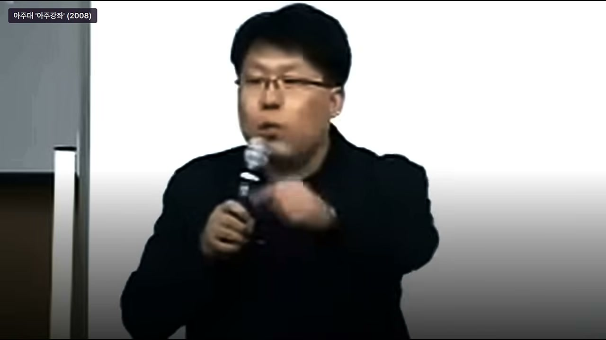
강연자가 옆문을 열고 들어와 무대에 오르는 순간, 연구원들의 불쾌한 기색이 역력해진다. 곳곳에서 헛기침이 나오고 “저거 뭐냐”는 말과 함께 어수선하고 소란해지기 시작한다. 그 이유는 강연자의 복장이 당시 기준으로 너무 황당했기 때문이다.
8. 파격 복장이 만든 불쾌감과 청중의 퇴장
당시 사람들은 길거리에서 검은 양복에 흰색 와이셔츠를 입고 다니던 시절이었다. 그런데 강연자는 무릎이 다 나온 찢어진 청바지, UCLA라고 적힌 티셔츠, 뉴욕 모자를 쓰고 등장했다. 박경철은 “지금도 그 연구소에 그렇게 강연하러 가는 사람이 없다”며 “제정도 복장도 굉장히 파격적”이라고 말한다.
연구원들은 그런 복장을 모욕으로 받아들인다. “어디서 저런 낡은 달 같은 놈이 강연하러 왔느냐”는 생각을 했다는 것이다. 불편한 기색이 역력했지만, 문제는 강연이 시작되고 터진다. 강연 시작 10분쯤 지나자 뒷줄부터 한 명씩 일어서 나가기 시작하고, 30분쯤 지나자 다 나가고 앞줄 몇 명만 남았다. 외부 손님은 박경철과 백수 친구뿐이었다.
박경철은 “아무리 강연 내용이 문제가 있어도 청중이 퇴장해 버리는 경우는 놀라운 일”이라고 말한다. 앞줄에 남은 사람들은 원래 성격이 특이한 사람들이라 특별한 경우가 아니면 잘 나가지 않는다는 것이다. 외부 손님인 박경철 일행은 연구소 순환 버스가 들어오지 않으면 나갈 수 없어서 끝까지 앉아 있을 수밖에 없었다.
9. 강연의 핵심 주장: WWW 안으로 은행·증권·핵무기·전쟁이 들어온다
강연의 주제는 박경철의 표현으로 “기가 막힌” 것이었다. 강연자는 칠판에 WWW를 적고, “머지않은 미래에 WWW 세상이 온다”고 말한다. 그리고 그 세상 안에는 은행도 들어오고 증권사도 들어오고, 이걸로 핵무기도 만들고 전쟁도 한다는 것이다.
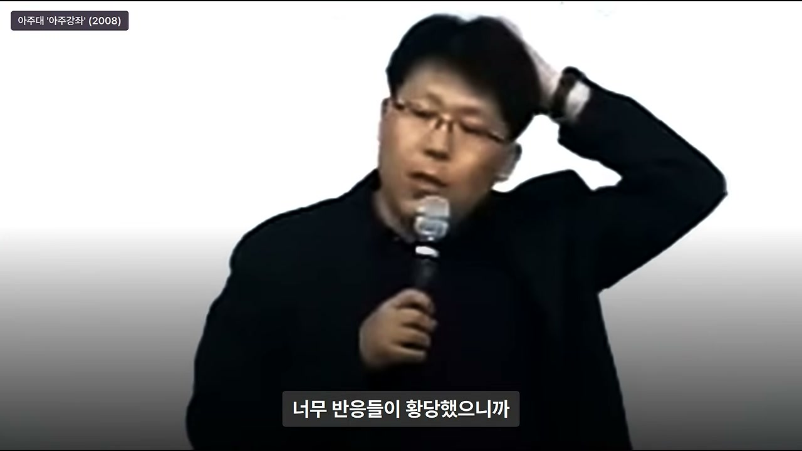
1993년 당시 WWW의 개념 자체가 대중에게 잘 알려지지 않았다. 모자이크가 갓 소개되던 시점이었고, 그래픽 기반의 웹 서비스가 이루어질 것이라고 상상하는 사람도 거의 없었다. 그런 시대에 “조만간 그런 세상이 온다”고 말하는 것은, 박경철이 비유하길 “내일부터 대학에서 각자 로켓 추진기를 한 개씩 지급해 그것을 타고 집에 가겠다”고 말하는 것과 같은 수준이었다.
강연이 끝나자 강연자는 청중의 황당한 반응에 민망했는지 머리를 꺾으면서 그냥 문을 열고 나간다. 아무도 박수 치는 사람이 없었고, 박경철은 “아마 그 연구소에 그 전에도 그런 일은 없었을 것”이라며 “쫓겨나듯이 나갔다”고 표현한다.
10. 박경철의 판단: 테트리스 개발하다 미쳤거나 망상장애
박경철은 강연을 들으면서 “저 친구 테트리스 개발하다 미쳤구나” 혹은 “망상장애와 같은 정신 질환이 있구나”라고 생각했다. 그뿐만 아니라 트렌드나 경제 현상을 연구하는 전문 학자들도 그를 “과대망상 환자”라고 배척하며 다 일어나서 나가 버렸다. 1993년에는 이런 이야기를 하면 “정신병자”로 취급받는 분위기였다.
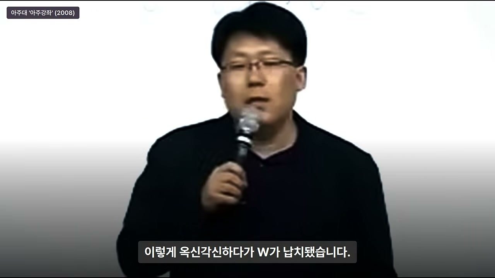
박경철은 당시 웹 개념을 잘 모르던 시절이었고, 모자이크가 갓 소개되던 시점이었으며, 그래픽 기반 웹 서비스는 아무도 상상하지 못하던 시절이었다고 강조한다. 그런 시대에 “조만간 그런 세상이 온다”고 말하는 강연자는 정상적인 판단으로는 받아들이기 어려웠던 것이다.
강연이 끝난 뒤 박경철은 자기를 부른 연구소 친구에게 따진다. “이런 강연 들으려고 대전 시민을 두고 올라왔냐”고 물었고, 친구도 이럴 줄 몰랐다며 사과하며 “저녁이나 먹으러 가자”고 한다. 바로 그 순간, 옆자리 백수 친구가 벌떡 일어난다.
11. 백수 친구의 이상한 감정 반응: “저 W와 이야기 좀 하고 가야 되겠다”
백수 친구는 박경철에게 “돈 10만 원만 달라”고 한다. 박경철이 “10만 원은 뭐 하게”라고 묻자, 친구는 “너네들끼리 먹고 따로 놀아라. 나는 저 W와 이야기 좀 하고 가야 되겠다. 따로 갈게. 경비 좀 달라”고 말한다. 박경철이 “네가 저 사람하고 무슨 얘기를 하느냐”고 묻자, 친구는 “강연에 깊은 감명을 받았다”고 답한다.
이때 박경철은 “백수에 대한 두 번째 이해”를 한다. 백수는 보통 사람과 감정 반응이 다르다는 것이다. 다른 사람들이 모두 나가고 없는 강연에서, 오직 백수만 그 말을 복음으로 받아들이고 강연자와 직접 이야기하겠다고 나선 것이다.
박경철은 백수에게 “내가 볼 때는 너나 나나 상태가 비슷하다. 너네들끼리 이야기해 봐. 서로 도움 안 되니까 그냥 가서 지내 먹고 집에 같이 가자”고 말한다. 그러나 백수는 막무가내였다. 박경철은 할 수 없이 경비와 여비를 떼어주고, 연구소 친구와 저녁을 먹은 뒤 대전으로 내려간다.
12. 주차장 차문 납치극: “저는 W를 믿습니다”
문제의 백수는 문을 열고 뛰어나가, 강연자 W가 주차장에서 차에 시동을 거는 순간 차문을 열어젖힌다. W가 놀라서 “왜 이러십니까?”라고 묻자, 백수는 그를 쳐다보며 “저는 W를 믿습니다”라고 말한다. W가 “믿어주시는 건 감사한데 왜 이러시나요?”라고 하자, 백수는 “저를 WWW 세상으로 인도해 주십시오”라고 답한다.
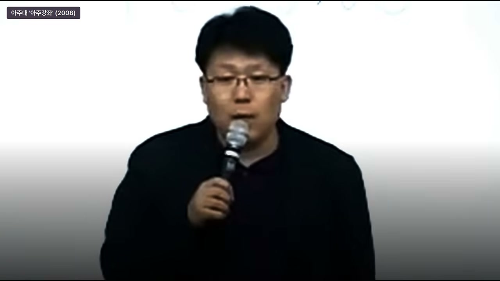
옥신각신하다가 결국 W가 “납치”된다. 백수는 W를 마포의 주먹구이집으로 끌고 간다. 당시 마포에는 불판에 고기를 구워 먹는 주먹구이집이 많았는데, 지금은 많이 없어졌다고 한다. 백수는 그곳에서 새벽 2시까지 W를 풀어주지 않는다.
박경철은 “백수가 가진 건 인내심밖에 없다”고 말한다. 백수는 끝까지 물고 늘어졌고, 나중에는 W가 “제게 원하는 게 뭡니까? 왜 이러십니까? 너 집에 가야 됩니다”라고 항복할 지경이 된다. 그러자 백수는 “WWW 세상으로 뛰어들 수 있는 실마리를 던져주면 나와주겠습니다”라고 조건을 내건다.
결국 W는 백수에게 “이렇게 하는 것이 어떻겠느냐”는 조언을 하고서야 풀려난다. 이 장면은 백수의 집요함과 W의 곤혹스러움을 동시에 보여주며, 훗날 이메일 회사의 씨앗이 되는 만남을 극적으로 묘사한다.
13. 마포 주먹구이집 새벽 2시: 인내심의 협상
이 일화의 핵심은 백수가 “강연에 감명을 받았다”는 이유만으로 강연자를 차문 앞에서 붙잡고 새벽 2시까지 협상했다는 점이다. 일반적인 사람이라면 강연이 끝난 뒤 “좋은 말씀 감사합니다” 정도로 끝냈을 텐데, 백수는 강연자와의 직접적인 연결을 얻어내기 위해 물리적으로 달라붙었다.
박경철은 이 장면을 통해 백수의 성격을 “인내심밖에 없는 사람”으로 규정한다. 그러나 그 인내심이 결과적으로는 강연자와의 실질적인 관계를 만들어냈고, 그것이 훗날 사업의 실마리가 된다. 영상은 이 지점에서 “0.9%의 사람은 천재가 아니라, 알아보고 뛰어들어 끝까지 매달리는 사람”이라는 메시지를 암시한다.
14. 2~3년 뒤 자본금 700만 원 회사, 자산 2조 원
그로부터 2~3년이 지난 뒤, 문제의 W는 작은 사무실을 하나 낸다. 자본금은 700만 원이었다. 그리고 이메일 회사를 창립했고, 그 회사의 자산 가치는 현재 2조 원 가까이 된다. 영상은 이를 “놀라운 일”, “쇼킹한 일”이라고 표현한다.
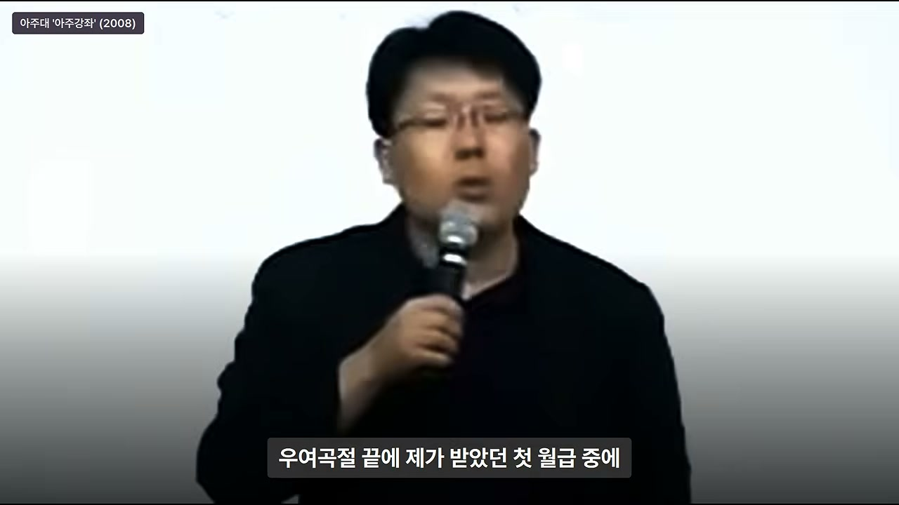
그러나 박경철은 회사가 700만 원에서 2조 원 규모로 성장한 것 자체보다 더 놀라운 것이 있다고 말한다. 그것은 15년 전에 “이런 세상이 펼쳐질 것”이라고 말했던 그 세상이 지금 자신의 눈앞에 그대로 펼쳐져 있다는 사실이다. 아무도 믿지 않았고, 옆에서 이야기해줘도 “미쳤다”고 했던 이야기들이 지금 거짓말처럼 현실이 되었다는 것이다.
박경철은 “그 사람의 이야기가 지금도 귀에 맴돈다. 소름이 끼친다”고 말한다. 그러면서 “5천만 명 중에 한 명 정도는 천재적인 인간이 있다. 한 치 앞의 운명을 내다보는 무당도 있다”고 인정한다. 그러나 그는 “문제는 백수”라고 강조하며, 천재를 알아보고 뛰어든 사람의 역할로 논점을 옮긴다.
15. 박경철이 소름 끼친 이유: 예언이 현실이 되었다
박경철이 소름 끼친 이유는 단순히 돈을 많이 번 사람이 나왔기 때문이 아니다. 1993년에 “WWW 세상이 온다”고 말한 사람의 예언이 15년 뒤 현실이 되었고, 그 예언을 믿고 뛰어든 백수 친구가 실제로 성공했다는 사실 때문이다. 이는 “새 기술을 알아보는 능력”이 단순한 지식이나 학위가 아니라 안목과 실행력의 문제임을 보여준다.
박경철은 이 지점에서 “강연자 이야기”를 마무리하고 “백수 친구 이야기”로 넘어간다. 그리고 이 대목부터는 박경철 본인이 “반대쪽 논리”를 아주 논리적으로 펼친다고 설명한다. 그 시절 상식으로는 충분히 그럴듯한 논리였고, 그 논리가 얼마나 합리적으로 보였는지를 보여주기 위해 첫 월급 대출 사건이 이어진다.
16. 천재 1명과 백수: 강연자는 0.1%, 백수는 ?
영상은 강연자 W를 “천재”의 위치에 놓는다. 그러나 박경철은 “문제는 백수”라고 말한다. 천재가 세상을 바꾸는 말을 했을 때, 그 말을 알아듣고 뛰어드는 사람이 없으면 아무 일도 일어나지 않는다. 백수 친구는 그 말을 알아듣고 차문을 열었고, 새벽 2시까지 매달렸고, 결국 사업의 실마리를 얻어냈다.
이 구도는 뒤에 나오는 0.1%, 0.9%, 99%의 비율과 정확히 연결된다. 영상은 “0.9%는 천재가 아니다”라고 말한다. 백수 친구도 이메일을 발명한 사람은 아니었다. 다만 그는 천재의 말을 알아보고, 그 사람에게 직접 붙어서 실마리를 얻어내는 사람이었다.
17. 첫 월급 60만 원 대출 사건: 30년 우정을 볼모로
강연 3주 뒤, 백수 친구에게서 병원으로 전화가 온다. 박경철은 “그날 잘 내려갔냐”는 상투적인 인사를 건넨다. 그런데 친구는 다짜고짜 “월급 받았나?”라고 묻는다. 박경철은 섬뜩했다고 한다. 당연히 받았을 월급을 왜 자기에게 묻느냐는 것이다.
박경철은 서울에 가면서 “당분간 몸 팔아서 세배(월급) 받기를 했다”는 이야기를 했었다. 친구는 “받기는 받았는데 왜 그러냐”며 “그 돈 나에게 빌려줘도 되지 않느냐”는 식으로 말한다. 박경철은 “좀 심하지 않냐”고 생각한다.
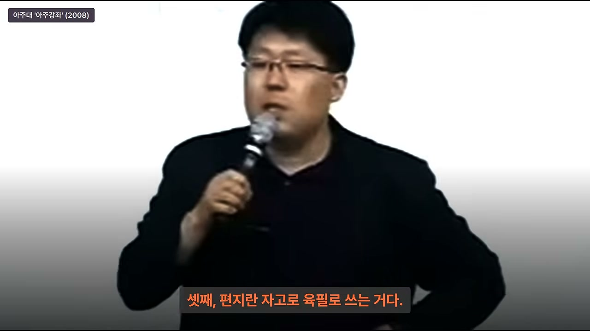
박경철은 레지던트 때까지 월급이 책값도 안 되는 수준의 용돈이었다고 말한다. 그러다 사회에 나와 처음 받은 월급을 친구가 달라는 것이 심하다는 것이다. 그는 “안 된다. 말 같지도 않은 소리 하지 마라”고 거절한다. 그러나 친구는 “꼭 자기한테 빌려줘야 된다”고 우긴다.
사실 백수가 돈을 빌려달라고 하면 “나중에 내가 돈 좀 벌면 생각하자. 지금은 안 된다”고 하는 것이 일반적이다. 그러나 친구는 “지금 그 돈을 빌려주든지, 자기와 30년간의 인간관계를 끊든지”라고 협박한다. 박경철은 마음으로는 끊고 싶었지만, 인간은 사회적 동물이라 그렇게 하면 “30년 전부터 알던 친구가 고작 돈 빌려달라고 했다고 우정을 끊는 나쁜 놈”이라는 소문이 날 것이라고 생각했다.
결국 우여곡절 끝에 박경철은 첫 월급 중 60만 원을, 최소 생활비를 제외하고 모두 친구에게 빌려준다. 그는 “지금도 그것만 생각하면 뼈가 아프다”고 말한다. 이 일화는 박경철이 얼마나 “사회적 체면”과 “합리적 계산”에 얽매여 있었는지를 보여주는 동시에, 백수 친구의 비정상적인 집요함을 다시 한 번 드러낸다.
18. 대구 분식집 작은 방에서 시작한 사업
돈을 빌려간 백수 친구는 대구에서 사업을 시작한다. 박경철은 “대구 출신이 계신지 모르겠다”며 대구의 범동(범어동?) 대구백화점 본점 뒤에 작은 분식집들이 있었는데, 그중 한 분식집의 작은 방을 하나 빌려 사업을 시작했다고 말한다. 서울도 아닌 대구의 작은 분식집 방에서 이메일 사업이 시작된 것이다.
시간이 지나자 친구에게서 다시 전화가 온다. 박경철은 “여보세요” 하니 “나다”라는 그놈 목소리였다. 박경철은 전화를 받자마자 “나 돈 없다”고 말한다. 그러자 친구는 “돈 이야기가 아니니까 안심하라”고 한다. 박경철이 “그럼 왜 전화했냐”고 묻자, 친구는 “자기가 제돈 빌려서 사업을 시작했는데 좀 도와달라”고 한다.
박경철이 “돈 말고 내가 뭘 도와주냐”고 묻자, 친구는 “아주 단순하다. 주소만 하나 만들면 된다”고 답한다. 박경철은 “그게 무슨 주소냐”며 의아해한다.
19. “가상 주소 하나만 만들어 줘”: 이메일 ID와 세 가지 반박
박경철은 “내가 대전시 중구 문화동 46-1번지가 내 주소인데, 무슨 주소를 또 만드냐”고 묻는다. 친구는 “그건 아니고, 굉장히 단순한 건데 가상 주소를 하나 만드는 것”이라며 “편지를 주고받는 데 필요한 것”이라고 설명한다. 듣고 보니 그것은 이메일 시스템을 운영하는 데 필요한 아이디를 만들어 달라는 것이었다.
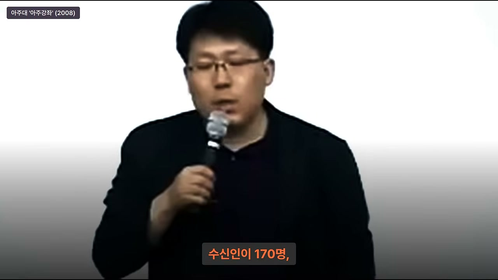
박경철은 첫마디로 “너 내 돈 빌려서 거지 됐나?”라고 묻는다. 그리고 “냉철한 지성과 합리적인 판단력으로 볼 때 너는 무조건 망한다”고 단언한다. 이유로 세 가지를 든다. 첫째, “1년에 편지 몇 통 쓰냐? 네가 1년에 편지 세 통 이상 쓰면 내 손에 장을 지지겠다. 사람이 다 그럴 텐데, 그걸 컴퓨터로 편지를 주고받는 사업이 되겠나? 무조건 안 된다.” 둘째, “설령 편지를 세 통 이상 쓰는 사람이 있다 쳐도, 우표값 30원이 아까워서 컴퓨터로 쓰겠나?” 셋째, “편지는 손으로 쓰는 것이다. 이 사업은 무조건 안 되는 사업이다.”
그러자 친구는 “W가 말씀하시기를, 에브리바디가 컴퓨터로 편지를 쓰는 날이 온다 했다”고 반박한다. 박경철은 “그날 내가 너를 데려간 내 업보다”라고 말하며, 어쩔 수 없이 아이디를 하나 만들어준다. 이 장면은 1993년의 상식이 얼마나 합리적으로 보였는지를 보여주는 동시에, 그 상식이 얼마나 좁은 전제 위에 서 있었는지를 드러낸다.
20. 1993년 상식은 틀린 계산이 아니라 틀린 전제였다
영상은 이 대목에서 중요한 해석을 제시한다. “1년에 편지 세 통, 우표값 30원, 편지는 손으로 쓰는 것”이라는 박경철의 판단은 그 시절 기준으로는 모두 맞는 말이었다. 계산 자체는 틀리지 않았다. 그러나 지금 와서 보면 틀린 것은 계산이 아니라 전제였다.
핵심은 “쓸 사람이 없는 게 아니라 아직 다들 연결되지 않았던 것”이다. 1993년에는 이메일을 쓸 사람이 없었던 것이 아니라, 이메일을 쓸 수 있을 만큼 사람들이 연결되지 않았던 것이다. 그 연결이 박경철의 병원에 먼저 들어온다. 이것이 이 이야기의 결정적 전환점이다.
21. 병원에 들어온 전용선: 정보고속도로와 행정전산망
박경철의 병원에 전용선이 들어온다. 지금으로 치면 메가패스와 같은 인터넷 전용선이 당시 병원에 들어온 것이다. 그것도 종합병원에 제일 먼저 들어왔다. 정부 기관과 종합병원에는 당시 정보고속도로 사업, 의료 정보 산업, 정부 행정전산망 사업 때문에 시범적으로 인터넷 전용선이 깔리기 시작했다.
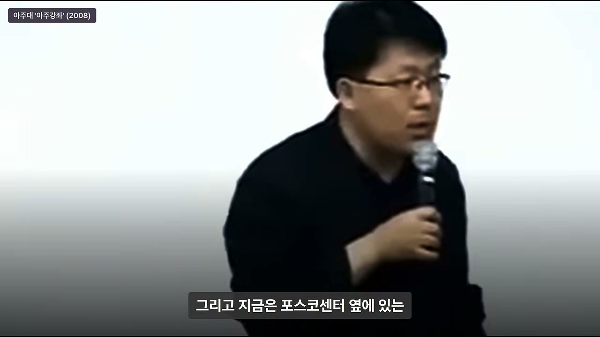
그러나 전용선이 들어오고 정부 지원 컴퓨터가 책상 위에 올라왔지만, 대체 쓸 데가 없었다. 기껏 해봐야 하이텔에 접속하는 속도가 조금 빨라지는 정도였다. 그 외에는 하등 용도가 없는 전용선이었다. 박경철은 컴퓨터를 방치해두고 있었다.
그러던 어느 날, 백수 친구에게서 또 전화가 와서 “뭘 하나 어떻게 해라”고 지시한다. 박경철은 시키는 대로 한다. 그러고 나서 어느 날 컴퓨터를 켜니까 갑자기 바이러스에 걸린 것처럼 창이 하나 펑 떠오른다.
22. 170명 수신인과 이틀 만의 70~80통 답장
창에는 천사(혹은 산실령) 그림이 편지를 들고 나타나 편지를 흔들며 “편지가 왔습니다”라고 표시된다. 박경철은 “이게 뭐야” 하고 클릭한다. 창에는 동창 관련 공지 같은 제목이 떠 있었고, 그는 “이놈이 한다는 짓이 기껏 이거구나” 하며 냉소적으로 바라본다.
그런데 잠깐 놀란다. 수신인 명단에 170명이 떠 있었던 것이다. 박경철은 “170명한테 한 방에 다 보낼 수 있으면 이거는 그런대로 나쁘지 않네”라고 생각한다. 거기다 “답장하기” 기능을 통해 “모두에게 답장하시겠습니까?”라는 메시지가 나오자 “예”를 누르고, “나는 대전에 무슨 병원인데 너네들은 어디 있니”라고 보낸다.
그랬더니 이틀 만에 무려 70~80명의 동창에게서 답장이 쏟아진다. “나는 정부 과천 청사에 있다”, “나는 어디에 있다”는 식의 답장이었다. 박경철은 “이거 신기하지 않냐”며 당시 반응을 전한다. 알고 보니 백수 친구는 동창 명부를 들고, 정부나 대기업, 종합병원처럼 전용선이 들어와 있을 만한 곳에 근무하는 친구들을 일일이 전화로 설명해 가입시키고, 그다음부터 낚시처럼 메일을 계속 던지고 있었던 것이다.
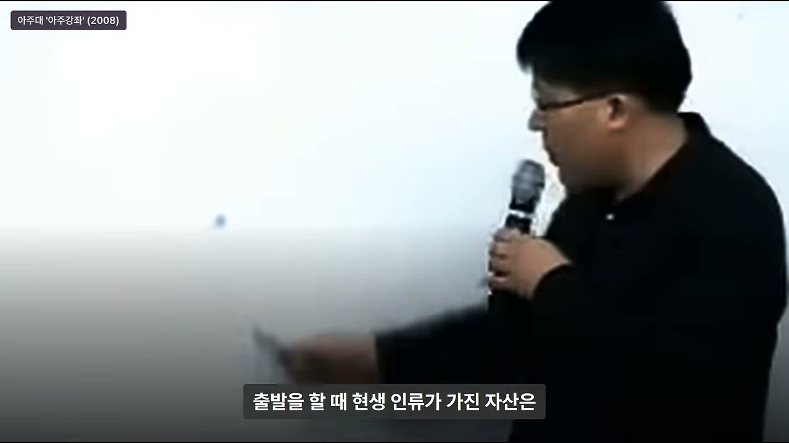
박경철도 그 낚시에 덜컥 물린 것이다. 이 장면은 이메일이라는 기술이 “기술 자체”만으로 확산된 것이 아니라, 전용선이 깔린 사람들을 하나씩 찾아가 가입시키고 메일을 보내는 집요한 영업과 네트워크 구축을 통해 확산되었음을 보여준다.
23. 병원 직원 일주일 만에 가입: 메일이 메신저가 되다
그날 이후 박경철의 병원은 진료 업무가 마비될 정도가 된다. 이유는 그가 병원 직원들에게 메일을 소개했더니, 다들 메일 놀이에 빠져버렸기 때문이다. 직원들은 메일을 메신저처럼 사용하기 시작한다. 예를 들어 간호사가 “어제 저녁에 뽀뽀하는 거 봤다”고 메일을 보내면, 상대가 “선생님이나 신경 쓰세요”라고 답하는 식이었다.
하루 종일 메일 놀이가 이어졌다. 너무 신기했기 때문에 메일 놀이를 시작한 것이다. 병원 직원들이 다 가입하는 데 일주일이 안 걸렸다. 물론 그 동창들 주변에 있던 사람들도 비슷하게 가입했다. 메일은 순식간에 퍼져나갔다.
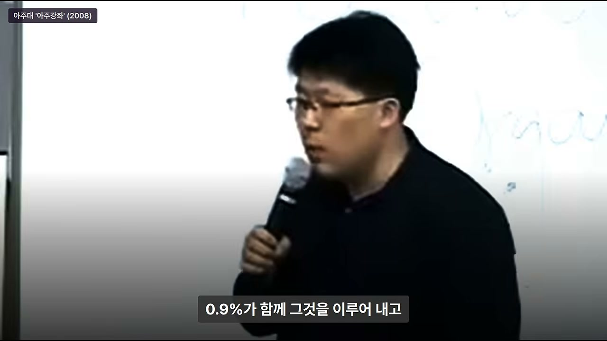
이 일화는 네트워크 효과를 보여준다. 처음에는 170명의 동창 명단에서 시작되었지만, 그 동창들의 주변 사람들로 확산되면서 병원 전체, 나아가 대구의 이메일 서비스로 번져나간다. 기술의 확산은 개인의 선택을 넘어 사회적 연결망을 타고 폭발적으로 일어난다.
24. 대구에서 시작한 한국 최초 상용 이메일, 250만 가입자, 골드만삭스 600억
서울도 아니고 대구에서 시작한 전자메일 서비스 회사는 1년 반 만에 250만 가입자를 모집한다. 1999년 초에는 외국계 투자사인 골드만삭스에 600억 원에 지분을 넘긴다. 현재는 포스코센터 옆에 있는 “쳐다보기도 어려운 빌딩”의 소유주이자, 그 안에 네 개의 벤처기업을 거느린 벤처기업 회장으로 변신해 있다.
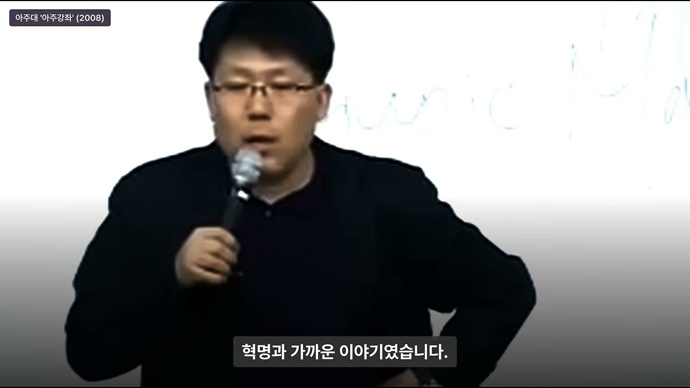
박경철은 “그리고 내 돈은 아직 안 갚았다”고 농담한다. 이 서비스는 대한민국 최초의 상용 이메일 서비스였다. 박경철은 “정말 엄청난 일이었다”고 말한다. 1993년에 “편지는 손으로 쓰는 것”이라며 사업을 부정했던 자신의 판단과, 그 판단을 비웃듯 성공한 친구의 현실이 대비된다.
25. 박경철의 고통스러운 질문: 같은 말을 들었는데 왜?
박경철은 친구가 크게 성공하는 과정을 옆에서 지켜보면서 괴로웠다고 한다. 그것은 배가 아파서가 아니었다. 질문 하나가 풀리지 않았기 때문이다. “같은 장소에서, 같은 사람으로부터, 같은 말을 들었는데, 자기도 눈이 두 개이고 나도 눈이 두 개이고, 귀도 똑같이 두 개 달렸는데, 왜 백수의 눈에는 인생을 걸고 뛰어들어야 하는 복음으로 들리고, 내게는 망상장애를 가진 환자의 헛소리로 들렸는가?”
그는 “혹시 미국 가서 MBA 한다고 접시 닦고 온 것이 통찰력을 넓힌 것인가?”라고 생각해본다. 그러나 그것도 아니라고 판단한다. 당시 강연장에 앉아 있던 박사급 연구원들은 백수 친구보다 더 오래 공부한 사람들이었기 때문이다. 학위나 지식의 양으로는 설명할 수 없다는 것이다.
그는 “대체 이유가 뭐냐”고 고민하던 차에, 마침 그때 읽고 있던 책에서 답을 구한다. 그 책은 제레미 리프킨의 책이었다. 박경철은 책 제목이 기억나지 않는다고 말하지만, “그때 허술한 책”이었고 리프킨의 아주 초기 단계 저작이었다고 설명한다.
26. 제레미 리프킨의 0.1%·0.9%·99% 이론
리프킨의 책에는 이런 내용이 있었다. 인류가 30만 년 전, 혹은 현생 인류가 20만~30만 년 전에 출발할 때 인류가 가진 자산은 돌도끼 하나였다. 그런데 2~30만 년이 흐르고 나서 인류가 가진 자산과 문명은 어마어마하게 발전했다. 그런데 많은 사람들은 착각하고 있다는 것이다.
무엇을 착각하느냐면, 지난 30년간 태어나고 사라져간 모든 인류가 이 문명의 발전에 기여했다고 생각한다는 것이다. 리프킨은 “천만의 말씀”이라고 말한다. 문명이 이만큼 온 데는 0.1%의 창의적 인간이 다른 사람이 보지 못하는 것을 보고, 다른 사람이 생각하지 못하는 것을 생각하고, 다른 사람이 꿈꾸지 못하는 것을 꿈꾸며, 어두운 곳에 “여기가 새로운 세상이다”라고 깃발을 꽂았기 때문이라는 것이다.
그러면 0.9%의 통찰력과 직관을 갖춘 안목 있는 인간이 그것을 알아보고 거기에 뛰어들어 한배를 타고 등을 밀고 손을 당기면서 문명을 건설한다. 리프킨은 이렇게 0.1%의 창의적 인간과 0.9%의 안목 있는 인간, 합쳐 1%가 문명을 이끌었다고 말한다. 그리고 나머지 99%를 “잉여 인간”으로 규정한다.
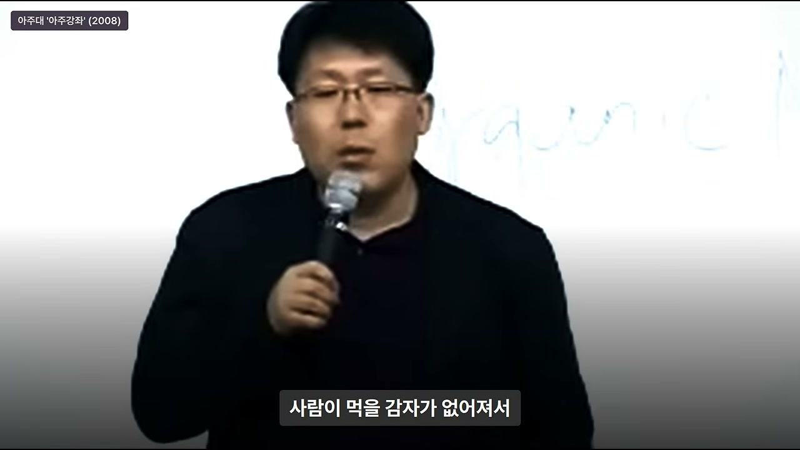
박경철은 “잉여 인간이라는 말이 그때 처음 등장했다”며 “가슴이 뜨끔하다”고 말한다. 리프킨은 “잉여 인간은 유기물(organic material)이다”라고 표현했다. 그냥 섭취와 배설을 반복하고 이산화탄소를 뿜어내는 존재, 때에 따라서는 자연계로 돌아가 동물성 사료가 되기도 하는 존재가 99%라는 것이다.
27. “잉여 인간은 유기물이다”: 99%에 대한 냉혹한 규정
리프킨의 구도에 따르면, 항상 0.1%가 새로운 것을 주장하면 0.9%가 함께 그것을 이루어낸다. 그러면 나머지 99%는 매번 “세상 참 좋아졌다. 옛날에는 이렇지 않았는데, 세상 참 놀랍군. 엄청난 일이야”라고 말하면서 따라온다. 박경철은 이 구도를 보면서 “답이 딱 떨어졌다”고 말한다.
W는 0.1%였고, 제 친구 백수는 0.9%에 속했고, 자신은 잉여 인간이었다. 박경철은 “인정하기 싫었지만 인정하지 않을 수 없었고, 그게 사실이었다”고 고백한다. 이 고백은 영상의 제목이 말하는 “0.9%의 조건”을 이해하는 핵심이다.

0.1은 처음 세상을 말하는 사람, 0.9는 그걸 알아보고 뛰어드는 사람, 99는 나중에 “세상 참 좋아졌다”고 말하는 사람이다. 박경철은 이 비율을 미래학자 제레미 리프킨의 책에서 읽었다고 기억하며, 자신을 99에 넣었다. 이 이야기 속 0.9는 천재가 아니었다. 백수 친구도 이메일을 발명하지 않았다.
28. 박경철의 자기 인정: 나는 99%, 백수는 0.9%
박경철은 자신을 99%에 넣은 뒤 두 가지를 붙잡고 고민한다. 첫째, “어떻게 하면 이걸 벗어날 수 있을까?” 둘째, “지금 1990년대에 일어나고 있는 이 엄청난 현상들과 변화들이 일시적인 현상인가?”라는 것이었다.
그는 리프킨 역시 지금 현재 변하고 있는 모습만 보고 하는 소리가 아닌가, 과거에도 정말 그랬는가를 궁금해한다. 그래서 역사를 거꾸로 소급해 되짚어보니, 구구절절이 리프킨의 이야기와 일치했다. 대표적인 예로 경제사만 놓고 보면 200년 전 산업혁명이 있었다.
29. 0.9%의 조건: 천재가 아니라 알아보고 뛰어드는 사람
영상은 0.9%를 “천재”로 규정하지 않는다. 오히려 0.9%는 천재가 말한 새로움을 알아보고, 그 사람에게 뛰어들어 함께 배를 타는 사람이다. 백수 친구는 이메일을 발명하지 않았지만, W의 말을 알아듣고 차문을 열었고, 새벽 2시까지 매달려 실마리를 얻어냈다.
박경철은 자신이 99%에 속한다는 것을 인정하면서도, 그 자리에서 벗어나기 위해 고민한다. 이 고민이 200년 전 산업혁명 사례로 이어진다. 산업혁명에서도 0.1%의 창의적 인간이 방적기를 만들었고, 0.9%의 안목 있는 사람들이 그 변화를 알아보고 뛰어들었다. 나머지 99%는 그 변화가 세상을 뒤집은 뒤에야 “세상 참 좋아졌다”고 말했다.
30. 200년 전 산업혁명: 방적기와 양모
박경철은 경제사만 놓고 보면 200년 전 산업혁명이 일어났다고 말한다. 산업혁명의 대표적인 기계이자 특허는 방적기였다. 그것은 양모와 모직물을 대량으로 생산하는 기계였다. 당시 영국에서는 모든 사람이 베틀에서 손으로 실을 짜서 모직물을 생산하고 있었다.
영국에서는 양털이 나왔지만 그것을 가공할 능력이 없어서, 길 건너 네덜란드로 가서 모직물을 생산해 다시 가져왔다. 그만큼 옷값과 모직값이 엄청나게 비쌌고, 아무나 입지 못했다. 그런데 기계를 통해 대량 생산이 가능해지자, 이것은 세상을 뒤집는 혁명과 가까운 일이 되었다.
기계를 만든 W는 창의적인 사람이었고, 획기적인 물건을 개발했다. 문제는 다른 사람들이었다. 대부분은 “그런 게 있나 보다” 하고 넘어갔지만, 글래스고에 그 공장이 처음 만들어졌을 때 주변에서 양과 감자밭을 일구던 사람들 중 일부는 다르게 생각했다. “저거 세상 뒤집겠다. 산업의 중심이 되겠다. 나도 저기 뛰어들 방법이 없을까?” 하고 고민한 것이다.
31. 감자밭을 갈아엎은 사람들: 양목장과 부의 축적
그들은 기계를 만들 수는 없었다. 그래서 기계가 잘 돌아가려면 무엇이 필요한지 생각했다. 모직 생산이 잘되려면 양털이 필요하고, 아무리 기계가 잘 돌아가도 양털이 없으면 안 된다는 것이다. 박경철은 “천재들의 가장 큰 단점은 좌우를 돌아보지 않는 것”이라고 말한다. 공장을 지어놓고 양털을 어디서 가져올지 생각하지 않고, “우선 지금 가져오듯이 하면 되겠지”라고 생각한다는 것이다.
그러나 일부 감자밭을 일구던 사람들은 감자밭을 갈아엎고 양목장을 시작한다. 모직 생산이 어마어마한 속도로 인기를 끌고 양털이 대량으로 필요해지면서, 양목장주들은 어마어마한 부를 축적한다. 뒤늦게 너도나도 감자밭을 갈아엎고 양목장을 하면서 영국에 감자 파동이 일어난다.
감자 기근으로 영국과 아일랜드 같은 경우에는 거의 절반이 죽는다. 박경철은 “그 이유가 바로 모직 때문”이라고 말한다. 모직 생산을 위한 양목장이 감자밭을 밀어내면서 사람들이 먹을 감자가 사라진 것이다.
32. 토머스 모어의 “양이 사람을 죽였네”
그 상황을 두고 토머스 모어는 『유토피아』라는 책을 쓴다. 『유토피아』 첫머리에는 “양이 사람을 죽였네”라는 말이 나온다. 읽어본 사람은 양이 뿔로 사람을 떠받아 죽였다고 생각하겠지만, 사실 그것은 당시 사회상, 즉 산업이 사람을 죽이는 것을 묘사한 것이다.
모두가 양목장을 하면서 사람이 먹을 감자가 없어졌고, 감자 기근이 들었고, 결국 굶어 죽게 생긴 사람들이 감자를 훔치게 되었다. 그러자 감자를 훔치면 교수형에 처한다는 법이 만들어졌고, 영국의 길거리에는 교수형에 처해진 목매달린 시체들이 줄줄이 늘어섰다. 토머스 모어는 그 가혹한 상황을 두고 『유토피아』를 쓴 것이다.
박경철은 “그만큼 한 명의 생각이 세상과 사회를 뒤집어 버린다”고 말한다. 결국 양목장주들이 어마어마한 부를 축적하게 된다.
33. 300개 유력 가문의 문양과 감자 캐는 후손 전설
박경철은 “지금 영국에 가면 약 300개 정도 유력 가문이 있다”고 말한다. 그 가문들의 문양을 잘 들여다보면 양털이나 양머리가 그려진 문양이 많다. 그것은 과거 200년 전에 조상들이 양목장을 했던 사람들의 후손이라는 것을 증명한다.
반면, 그때 여전히 감자밭을 일구던 사람들의 후손은 지금도 감자를 캐고 있다는 전설이 있다. 이 대비는 0.1%와 0.9%가 만들어낸 부의 축적이 얼마나 오래 지속되는지를 보여주는 상징적인 이야기다.
34. 다음 파트로 넘어가는 연결: 소형 증기기관
영상은 여기서 “문제는 그때부터 시간이 다시 조금 더 흐른다. 유럽에 드디어 소형 증기기관이 만들어지고 그것을 마차에…”라는 대목에서 끝난다. 이는 다음 파트에서 이어질 새로운 기술 변화, 즉 증기기관과 운송 혁명으로 연결되는 지점이다.
제공된 1부에서는 WWW와 이메일, 그리고 0.1%·0.9%·99%의 문명론, 산업혁명의 방적기와 양목장 사례까지 다뤄진다. 휴대폰 이야기는 도입부에서 “30년 전 WWW와 휴대폰이 처음 나왔을 때 사람들이 어떻게 받아들였는지”라는 예고로만 등장하고, 본격적인 사례는 2부에서 이어질 것으로 보인다.
주요 인용 및 발언
“머지않아 이 안으로 은행도 들어오고 증권사도 들어오고 전쟁까지 여기서 하게 될 거라고요.”
1993년 강연자가 칠판에 WWW를 쓰고 한 말이다. 당시 청중에게는 도저히 받아들이기 어려운 주장이었고, 실제로 30분 만에 대부분이 강당을 떠났다.
“저는 W를 믿습니다.”
강연이 끝난 뒤 백수 친구가 주차장에서 강연자의 차문을 열고 한 말이다. 같은 강연을 들은 박경철은 “망상장애”라고 생각했지만, 백수는 그 말을 인생을 걸 복음으로 받아들였다.
“저를 WWW 세상으로 인도해 주십시오.”
백수가 강연자에게 자신을 받아달라고 요구한 말이다. 이후 마포 주먹구이집에서 새벽 2시까지 이어진 협상의 시작점이다.
“지금 그 돈을 빌려주든지, 자기와 30년 간의 인간관계를 끊든지.”
첫 월급을 빌려달라는 백수 친구의 협박이다. 박경철은 사회적 체면과 소문 때문에 결국 60만 원을 빌려준다.
“1년에 편지 세 통 이상 쓰면 내 손에 장을 지진다.”
박경철이 이메일 사업을 부정하며 한 말이다. 그는 “우표값 30원이 아까워서 컴퓨터로 편지를 쓰겠냐”, “편지는 손으로 쓰는 것”이라며 사업을 확신했다. 그러나 이 판단은 계산이 아니라 전제가 틀린 것이었다.
“쓸 사람이 없는 게 아니라 아직 다들 연결되지 않았던 거죠.”
영상의 핵심 해석 중 하나다. 1993년에는 이메일을 쓸 사람이 없었던 것이 아니라, 이메일을 쓸 수 있을 만큼 사람들이 연결되지 않았던 것이다.
“0.1은 처음 세상을 말하는 사람, 0.9는 그걸 알아보고 뛰어드는 사람, 99는 나중에 세상 참 좋아졌다고 말하는 사람.”
박경철이 리프킨의 이론을 정리한 말이다. 영상의 제목이 말하는 “0.9%의 조건”을 가장 압축적으로 보여주는 문장이다.
“잉여 인간은 유기물이다.”
리프킨이 99%의 인간을 규정한 표현이다. 박경철은 이 말을 소개하며 “가슴이 뜨끔하다”고 말하고, 자신을 99%에 넣는다.
“양이 사람을 죽였네.”
토머스 모어의 『유토피아』 첫머리에 나오는 말이다. 박경철은 이것이 양이 뿔로 사람을 죽인 것이 아니라, 산업과 양목장이 사람을 죽인 것을 묘사한 것이라고 설명한다.
결론 및 시사점
이 영상의 1부는 “새 기술을 알아보는 능력”이 단순한 지식이나 학위, 합리적 계산 능력이 아니라는 점을 보여준다. 1993년의 박경철은 외과 전문의였고, 냉철한 지성과 합리적 판단력을 갖춘 사람이었다. 그러나 그는 WWW와 이메일의 가능성을 “망상장애”로 판단했고, “편지는 손으로 쓰는 것”이라며 사업을 부정했다. 반면, 1년째 일자리가 없던 백수 친구는 그 말을 알아듣고 차문을 열었고, 새벽 2시까지 매달려 실마리를 얻어냈다.
영상이 제시하는 0.9%의 조건은 천재성이 아니다. 0.1%의 창의적 인간이 던진 새로움을 알아보고, 그것에 뛰어들어 함께 배를 타는 안목과 실행력이다. 백수 친구는 이메일을 발명하지 않았지만, W의 말을 알아보고 뛰어들었다. 그리고 그 선택은 1년 반 만에 250만 가입자, 골드만삭스 600억 원 투자, 자산 가치 2조 원 규모의 기업으로 이어졌다.
박경철은 자신을 99%의 “잉여 인간”에 넣으면서도, 그 자리에서 벗어나기 위해 두 가지 질문을 붙잡는다. “어떻게 하면 이걸 벗어날 수 있을까?” 그리고 “1990년대의 변화가 일시적인 현상인가?”라는 질문이다. 그는 역사를 거꾸로 되짚어 200년 전 산업혁명에서 같은 구도를 발견한다. 방적기를 만든 0.1%의 창의적 인간, 양털의 필요를 알아보고 감자밭을 갈아엎은 0.9%의 사람들, 그리고 그 변화가 세상을 뒤집은 뒤에야 “세상 참 좋아졌다”고 말한 99%가 있었다.
이 영상의 실용적 시사점은 다음과 같다. 첫째, 새 기술을 볼 때 “지금의 상식”으로 계산하기 전에 “전제가 바뀌고 있는 것은 아닌가”를 먼저 물어야 한다. 1993년의 박경철은 계산을 틀린 것이 아니라 전제를 놓쳤다. 둘째, 기술의 확산은 기술 자체보다 연결망을 타고 일어난다. 이메일은 전용선이 깔린 병원과 정부 기관, 동창 명부를 통해 퍼져나갔다. 셋째, 0.9%가 되기 위해서는 천재가 될 필요는 없지만, 새로움을 알아보고 직접 뛰어들어 끝까지 매달리는 실행력이 필요하다.
2부에서는 휴대폰이 처음 등장했을 때 사람들이 어떻게 반응했는지, 그리고 소형 증기기관과 운송 혁명으로 이어지는 또 다른 사례가 다뤄질 것으로 예상된다. 1부가 “WWW와 이메일”을 통해 0.9%의 조건을 보여주었다면, 2부는 그 조건이 다른 기술 변화에서도 반복되는지 검증하는 구조가 될 것이다.
댓글
GitHub 이슈 기반 댓글 시스템입니다.